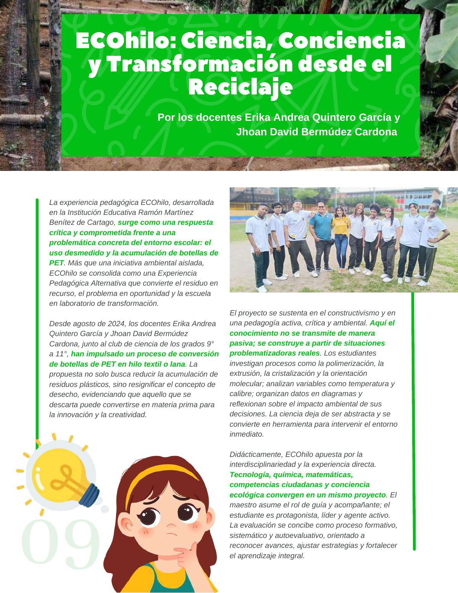
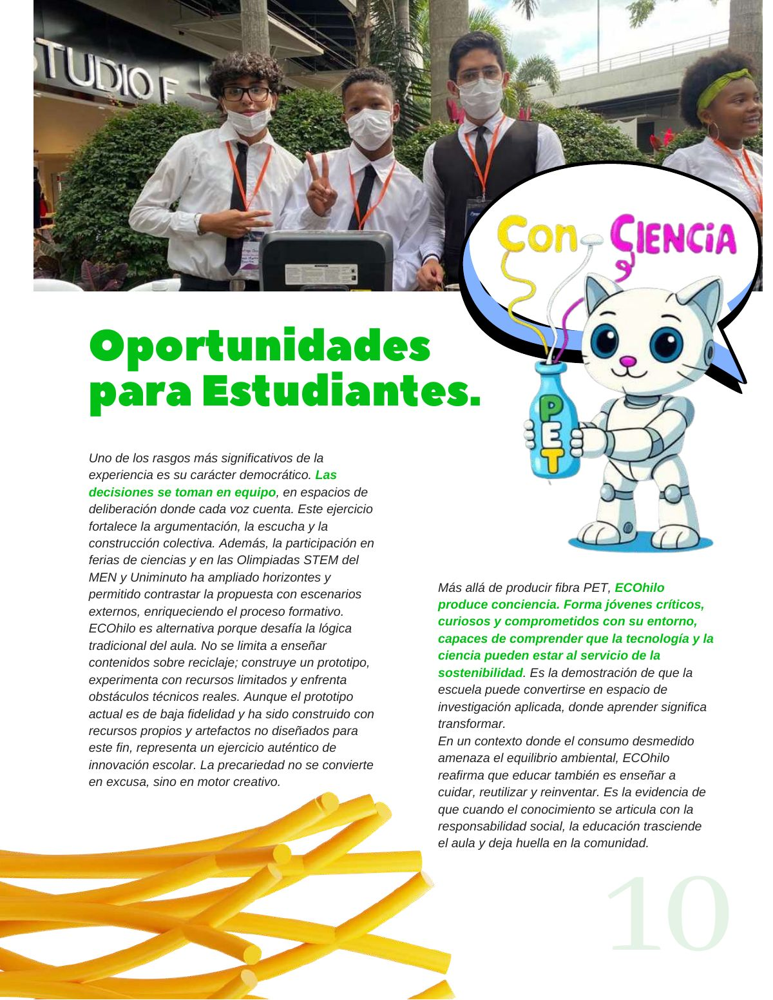

ECOhilo: ciencia, conciencia y transformación desde el reciclaje
Cómo estudiantes convierten residuos plásticos en innovación científica, con conciencia ambiental, liderazgo juvenil y transformación sostenible desde la escuela.
PDF · 2 págs. · 686 KBLa experiencia pedagógica ECOhilo, desarrollada en la Institución Educativa Ramón Martínez Benítez de Cartago, surge como una respuesta crítica y comprometida frente a una problemática concreta del entorno escolar: el uso desmedido y la acumulación de botellas de PET. Más que una iniciativa ambiental aislada, ECOhilo se consolida como una Experiencia Pedagógica Alternativa que convierte el residuo en recurso, el problema en oportunidad y la escuela en laboratorio de transformación.
Desde agosto de 2024, los docentes Erika Andrea Quintero García y Jhoan David Bermúdez Cardona, junto al club de ciencia de los grados 9° a 11°, han impulsado un proceso de conversión de botellas de PET en hilo textil o lana. La propuesta no solo busca reducir la acumulación de residuos plásticos, sino resignificar el concepto de desecho, evidenciando que aquello que se descarta puede convertirse en materia prima para la innovación y la creatividad.
El proyecto se sustenta en el constructivismo y en una pedagogía activa, crítica y ambiental. Aquí el conocimiento no se transmite de manera pasiva; se construye a partir de situaciones problematizadoras reales. Los estudiantes investigan procesos como la polimerización, la extrusión, la cristalización y la orientación molecular; analizan variables como temperatura y calibre; organizan datos en diagramas y reflexionan sobre el impacto ambiental de sus decisiones. La ciencia deja de ser abstracta y se convierte en herramienta para intervenir el entorno inmediato.
Didácticamente, ECOhilo apuesta por la interdisciplinariedad y la experiencia directa. Tecnología, química, matemáticas, competencias ciudadanas y conciencia ecológica convergen en un mismo proyecto. El maestro asume el rol de guía y acompañante; el estudiante es protagonista, líder y agente activo. La evaluación se concibe como proceso formativo, sistemático y autoevaluativo, orientado a reconocer avances, ajustar estrategias y fortalecer el aprendizaje integral.
Oportunidades para Estudiantes.
Uno de los rasgos más significativos de la experiencia es su carácter democrático. Las decisiones se toman en equipo, en espacios de deliberación donde cada voz cuenta. Este ejercicio fortalece la argumentación, la escucha y la construcción colectiva. Además, la participación en ferias de ciencias y en las Olimpiadas STEM del MEN y Uniminuto ha ampliado horizontes y permitido contrastar la propuesta con escenarios externos, enriqueciendo el proceso formativo. ECOhilo es alternativa porque desafía la lógica tradicional del aula. No se limita a enseñar contenidos sobre reciclaje; construye un prototipo, experimenta con recursos limitados y enfrenta obstáculos técnicos reales. Aunque el prototipo actual es de baja fidelidad y ha sido construido con recursos propios y artefactos no diseñados para este fin, representa un ejercicio auténtico de innovación escolar. La precariedad no se convierte en excusa, sino en motor creativo.
Más allá de producir fibra PET, ECOhilo produce conciencia. Forma jóvenes críticos, curiosos y comprometidos con su entorno, capaces de comprender que la tecnología y la ciencia pueden estar al servicio de la sostenibilidad. Es la demostración de que la escuela puede convertirse en espacio de investigación aplicada, donde aprender significa transformar.
En un contexto donde el consumo desmedido amenaza el equilibrio ambiental, ECOhilo reafirma que educar también es enseñar a cuidar, reutilizar y reinventar. Es la evidencia de que cuando el conocimiento se articula con la responsabilidad social, la educación trasciende el aula y deja huella en la comunidad.
Así se ve en la revista
2 páginas
